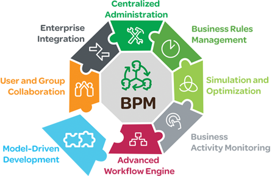

FlowCharter is advanced analysis and business process modelling tool.
Price: R700
African Information Management strives to provide our clients with the leading business process modelling and analysis software on the market. Our consultants will look into your business fo find the right software for your needs then implement and train your staff with the aim of improving your business processes.
FlowCharter is advanced analysis and business process modelling tool.
Price: R700
Process is a process simulation and modelling tool used to map functionality.
Price: R1800

Process for Six Sigma most sophisticated simulation tool that assists with Six Sigma.
Price: R2300
|  |
AIM is a consulting business based in Cape Town, South Africa. Opened in 2013 in partnership with iGrafx as the South African representative. |